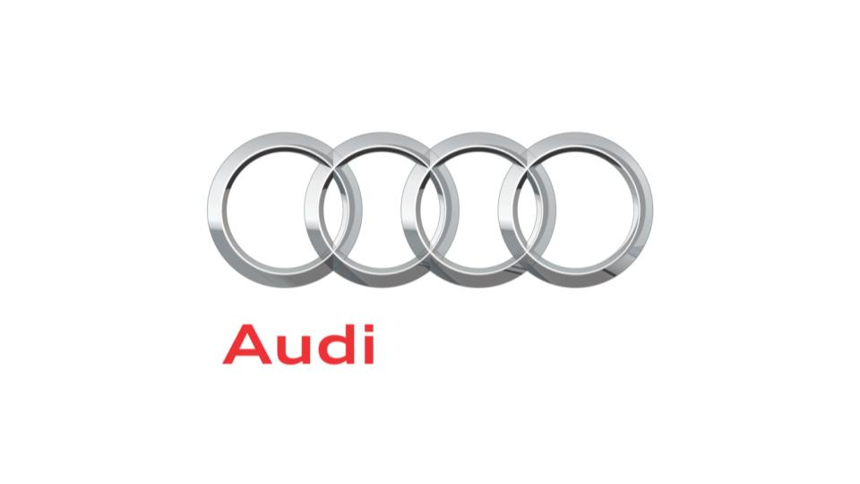
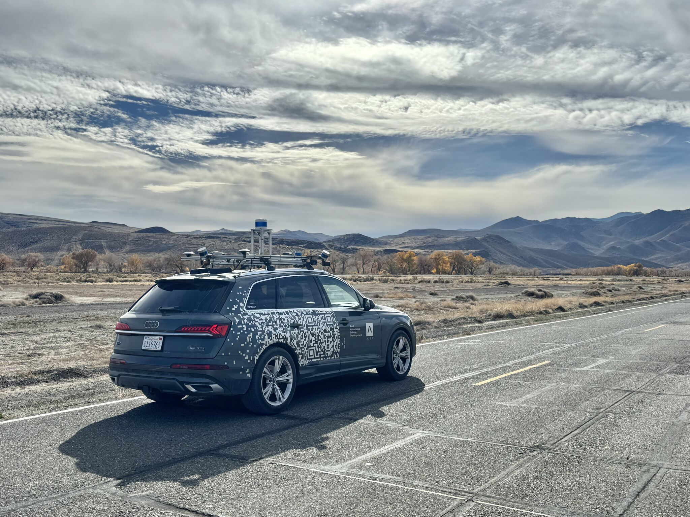
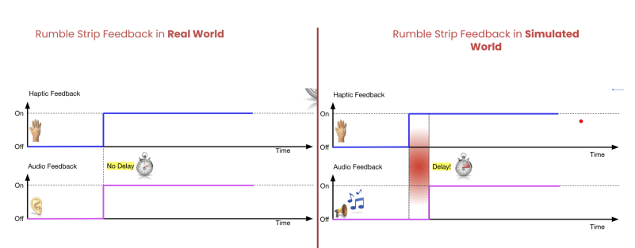
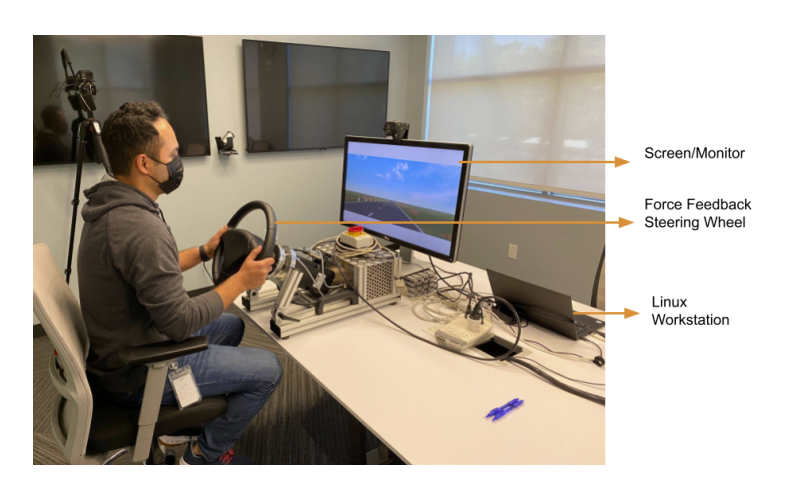
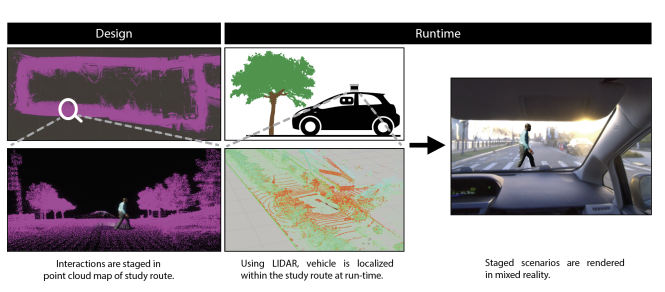
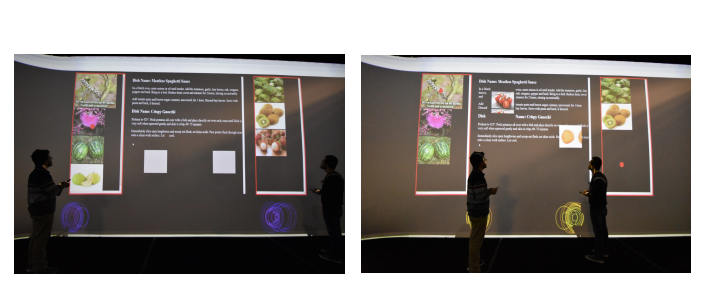
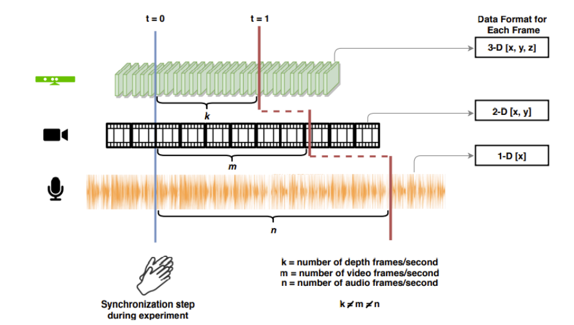

Advancing human-centered automotive research at the intersection of HCI, psychophysics, and ADAS — translating complex user data into safer, more intuitive vehicle systems.
I am a Senior Human Machine Interface (HMI) Researcher at Audi of America, Advanced Driver Assistance Systems, based in San Jose, CA. My work encompasses the full lifecycle of user research — from study design and execution to statistical analysis and stakeholder-ready reporting for Audi AG and Porsche AG.
My academic background spans Computer Science and Mathematics with a doctoral research focus on Human-Computer Interaction at Rensselaer Polytechnic Institute. Over 7+ years of industry and academic research, I have conducted rigorous studies across automotive HMI, psychophysics, immersive environments, and group dynamics.
Some of my previous work includes psychophysical methods to quantify human perception of haptic and audio feedback in driving contexts — from haptic lateral assistance systems to detection thresholds for audio-haptic asynchrony in force-feedback steering wheels. My research directly shapes ADAS product design at the OEM level.
Past & Present Affiliations

Audi of America'"> Woven Planet'"> Toyota Research Institute'"> Northeastern University'"> RPI'"> Connecticut College'">A track record of rigorous user research across leading automotive and academic environments.
Combining rigorous Computer Science foundations with deep Human-Computer Interaction research expertise.
Peer-reviewed studies spanning automotive HMI, psychophysics, and immersive human-computer interaction. Click Key Contributions on each project to view detailed research outcomes.

Automotive HMIHigh-fidelity evaluation of custom HMI prototypes with real participants at specialized facilities including the Nevada Automotive Test Center. Studies assess usability, situational awareness, and acceptance of hands-free and Level 2+ ADAS at speed.

PsychophysicsInvestigated the perceptual detection threshold (DT) for temporal asynchrony between audio and haptic feedback in a Sensodrive force-feedback steering wheel. Results directly inform ADAS multimodal feedback timing standards.

Automotive HMIInvestigated user acceptance of continuous visual risk feedback for lateral assistance systems, combining a simulated Head-Up Display (HUD) with haptic steering feedback. Within-subject A/B test on a tabletop driving simulator.

Automotive HMICollaborative project with Cornell University investigating the ecological validity of driving simulation studies — systematically comparing controlled lab environments to in-vehicle real-world road conditions. Published at ACM CHI 2024.

Immersive HCIInvestigated multi-person collaborative interaction with a large-scale immersive display using smartphones as touchpads, voice commands, and spatial location awareness. Published in Springer IntelliSys proceedings.

Survey & ReviewComprehensive review paper exploring tools, technologies, and methodological approaches for multimodal data research in dynamic group interactions — spanning audio, video, physiological, and behavioral modalities.
9 peer-reviewed publications spanning automotive HCI, psychophysics, and immersive computing.
Three granted and published patents spanning automotive safety systems and immersive spatial computing.
A comprehensive research toolkit developed across academic, postdoctoral, and industry environments — targeted toward senior UX and HMI research roles.
I'm open to discussing new research opportunities, senior UX or HMI researcher roles, academic collaborations, and consulting engagements in automotive human factors and user research.
Targeting senior roles in UX Research, HMI Research, and Human Factors — particularly in automotive, mobility, and emerging technology domains. Open to industry and research leadership positions.